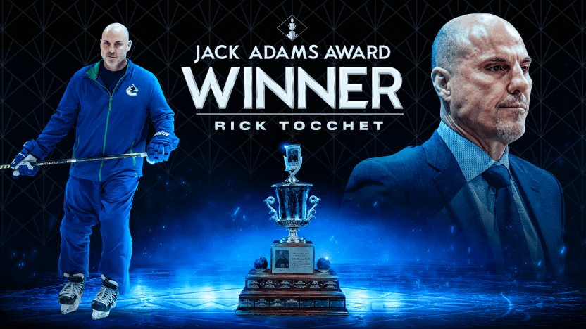
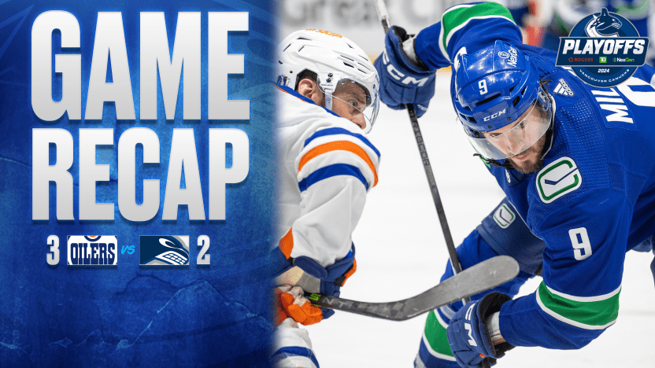
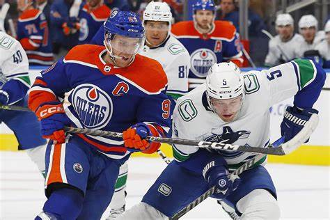
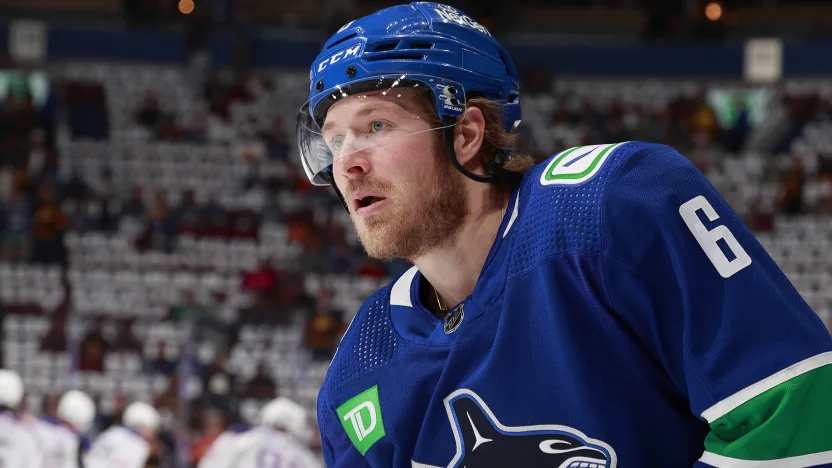

Vancouver Canucks Home/News
Welcome to the Home and News page of my Vancouver Canucks fanpage! Here, you will discover the latest Vancouver Canucks news, as well as the Canucks' official social media links at the bottom of the page. Use the "Back to top" button to scroll back up, and use the dropdown menu to navigate between pages.
Canucks coach Rick Tocchet named 2023/24 Jack Adams winner

May 22, 2024
The National Hockey League has announced that Vancouver Canucks coach Rick Tocchet has won the Jack Adams Trophy as “the NHL coach adjudged to have contributed the most to his team’s success.” Tocchet, in his first full season as head coach, led the Canucks to a 50-23-9 (W/L/OTL) record, their best regular season record since 2011/12 and the team’s first Pacific Division title since the 2012/13 season.
Canucks make late third period push, season ends in Second Round against Oilers

May 20, 2024
The Vancouver Canucks' 2023/24 season ended on Monday night as they were defeated 3-2 by the Edmonton Oilers, despite making a late push and scoring 2 goals in the 3rd period. Canucks rookie goalie Artūrs Šilovs had a standout performance, robbing Leon Draisaitl of a goal early in the 1st period.
The Canucks failed to capitalize on a 4 minute Power Play at the end of the 1st period and at the beginning of the 2nd as they were outshot 1-0 by the Oilers despite having a man advantage for 4 minutes straight. The Oilers proceded to score 3 straight in the 2nd, with goals coming from Cody Ceci, Evan Bouchard, and Ryan Nugent-Hopkins (PP) to go 3-0 up heading into the 2nd intermission.
In the third, Conor Garland scored at 11:27 to get the Canucks on the board, and Filip Hronek scored his first goal of the playoffs with 4 minutes remaining from the point do make it a 1 goal game. The Canucks pulled the goalie to get the extra man advantage, but they failed to produce anything, with the final score being 3-2, and the Oilers taking the series win 4-3.
Post game, Canucks coach Rick Tocchet said: "Arty played his ass off for us, what a playoff for that kid,”, praising the Canucks rookie goaltender.
Brock Boeser was absent for Game 7, suffering a blood clotting issue. The Canucks battled until the end, with many players staying after the game to thank the fans one last time befor the start of next season.

Brock Boeser to miss Game 7 due to blood clotting issue

May 18, 2024
Brock Boeser is set to miss Monday's Game 7 of the Western Conference 2nd round against the Edmonton Oilers due to a non-life threatning blood clotting issue. Boeser, with 7 goals and 5 assists in 12 playoff games for the Canucks leads the Canucks in playoff goals and points. Boeser did not practice on Sunday after he played 18:40 in the Canucks' 5-1 loss in Game 6 on Saturday.